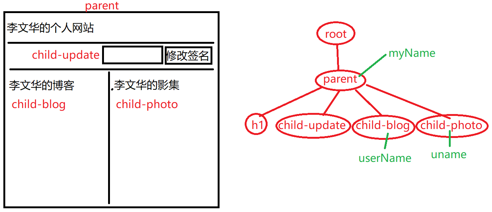

01.TypeScript语法知识
(1)类型声明：
class中的成员（属性、方法）、参数的参数都可以声明类型：
class Book{
price: number = 12.5
add(n: number): void{ }
}
(2)TS中的新类型：接口(interface)
接口是一种特殊的class，用于规定一个对象“必须具备”哪些功能
interface Runnable{
run( );
stop( );
}
class Car implements Runnable{
run( ){ .... }
stop( ){ .... }
}
1.自定义管道：
工具命令： ng g pipe 管道名
@Pipe({
name: 'sex'
})
class SexPipe {
transform(val, args){
return ...;
}
}
练习：创建一个管道：zzmm，可以把数字1/2/3分别转换为“党员/中国共产党党员”、“团员/中国共青团团员”和“群众/中国人民群众”
2.(重点/难点)父子组件间的数据传递
ng g component parent
ng g component child
--------------------------------------------------
parent.component.html:
< app-child >< /app-child >
--------------------------------------------------

(1)父组件给子组件传递数据： 父=>子 —— Props Down
(1.1)子组件声明自己专有的属性
@Input() //Input装饰器把下面的属性变为“输入型属性”
userName: string;
(1.2)父组件使用子组件的专有属性赋值——值为父组件的模型数据
< app-child [userName]="myName" >
(2)子组件给父组件传递数据： 子=>父 —— Events Up
(2.1)子组件声明并触发事件，触发时携带自己的数据
@Output() //声明输出型属性
unameEvent = new EventEmitter();
.....
this.unameEvent.emit( 123 );
(2.2)父组件监听子组件的事件，并提供处理函数接收事件数据
< app-child (unameEvent)="doEvent($event)" >
...
doEvent( data ){ .... }
3.服务和依赖注入
Angular认为：
Component：组件，仅应该只负责视图，只参与展示；与展示无关的语句都应该剥离出去；例如：做日志、计时、网络数据访问...
Service：服务，就是一个简单的对象，负责执行从组件中剥离的与视图无关的操作，例如：做日志、计时、网络访问....
创建服务： ng generate service 服务名
inject：打针，注入
injectable：能被注入给别人的
Angular创建对象的两种方式：
(1)手工创建
var logger = new LoggerService();
logger.log('用户增加了一个商品');
(2)依赖注入(Dependency Injection)
constructor(logger:LoggerService){
logger.log('用户增加了一个商品')
}
在构造方法中声明需要依赖某个对象，且该对象是“可以被注入的(@Injectable)”,那么Angular就会自动创建依赖的对象，并注入给当前构造方法
今日练习
今日练习：使用Angular提供的异步请求服务，完成学子商城“商品列表”
(1)API：http://www.codeboy.com/data/product/list.php?pno=2&kw=
(2)Angular提供了一个网络访问服务： HttpClient
1)在主模块中引入HTTPClientModule模块
import { HttpClientModule } from '@angular/common/http'
....
imports: [ HttpClientModule, ],
2)在组件中注入依赖的HTTPClient服务
import { HttpClient } from '@angular/common/http';
class XxxComponent{
http = null;
constructor( http: HttpClient ){
this.http = http;
}
//加载商品
loadProduct(){ //3)在组件方法中使用被注入的httpClient服务
----this.http.get(url).then( (res)=>{ } )----
----this.http.get(url).subscribe( (res)=>{ } )---- 这两句是被划掉的，word中的标志
}
}